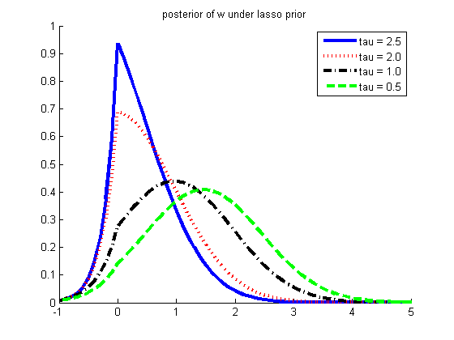

Reproduce fig 1 of "Bayesian lasso regression", Chris Hans, 2009
function lassoPostPlot()
bols = 1.96;
xtx = 1;
s2 = 1;
v2 = s2/(xtx);
v = sqrt(v2);
taus= [2.5 2 1 0.5];
figure; hold on
[styles, colors, symbols] = plotColors;
for i=1:length(taus)
tau = taus(i);
muPlus = bols - tau*v2;
muMinus = bols + tau*v2;
a = gaussProb(-muMinus/v, 0, 1)/gaussProb(0,muMinus,v);
b = gaussProb(muPlus/v, 0, 1)/gaussProb(0, muPlus, v);
w = a/(a+b);
beta = -1:0.1:5;
post = w*gaussTrunc(beta, muMinus, v, false) + ...
(1-w)*gaussTrunc(beta, muPlus, v, true);
plot(beta, post, [styles{i}, colors(i)], 'linewidth', 3, 'markersize', 8);
legendStr{i} = sprintf('tau = %3.1f', tau);
prior = (tau/2)*exp(-abs(beta));
end
legend(legendStr);
title('posterior of w under lasso prior')
printPmtkFigure('lassoPost1d')
end
function p = gaussTrunc(t, m, s, plus)
s = s.^2;
t = t(:);
if plus
p = gaussProb(t, m, s)/gausscdf(m/s) .* (t >= 0);
else
p = gaussProb(t, m, s)/gausscdf(-m/s) .* (t < 0);
end
end
